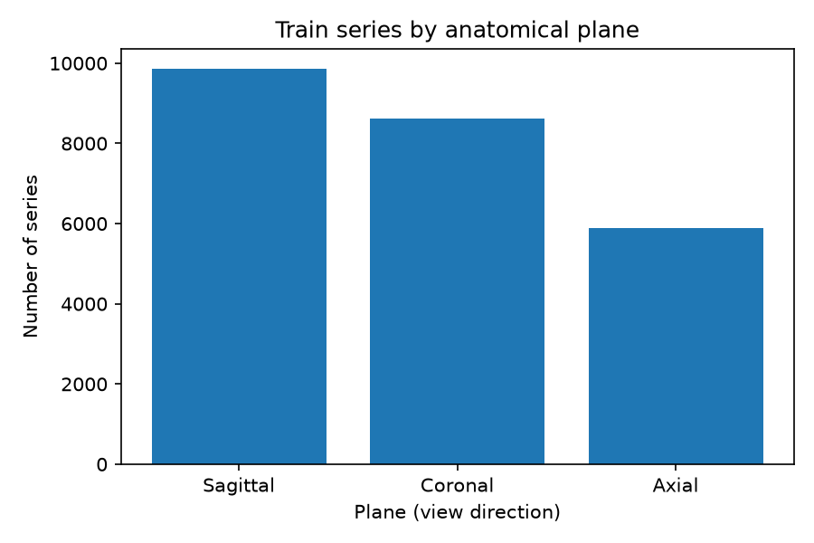
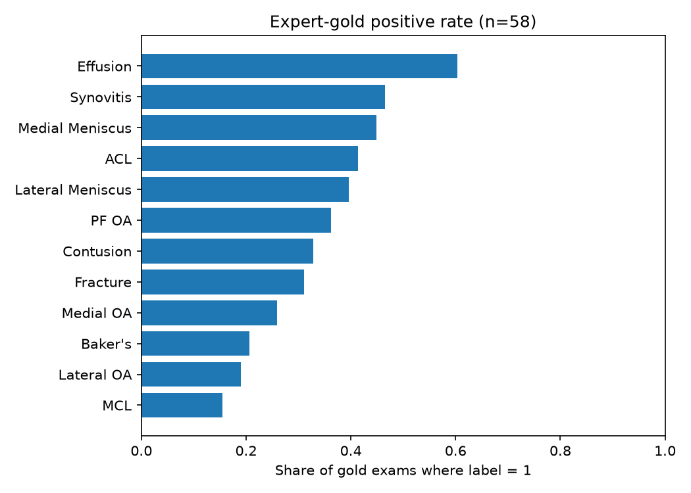

Looking Carefully at the Knee MRI Data (EDA)
This is Post 02 of the RSNA Knee Imaging Playbook. RSNA is the Radiological Society of North America. The contest is RSNA Knee Abnormality Detection.
EDA means exploratory data analysis: looking carefully at the data before building a model. Here we only use the public CSV tables (comma-separated values: spreadsheet-like text files). We do not open the huge DICOM image folders yet (DICOM is the hospital scan file format).
All numbers below come from notebooks/01_data_audits.py run on local copies of train.csv and train_series.csv.
What one exam looks like
In this contest, one training row is not one photo. It is one study: one scanning visit for one knee, identified by StudyInstanceUID.
Each study contains several series (scan sequences). Each series has:
- a plane (view direction)
- flags for fluid-sensitive imaging and fat suppression
| Fact | Value from our audit |
|---|---|
| Train studies | 4,407 |
| Train series | 24,371 |
| Series per study | min 3, mean 5.53, max 14 |
| Expert-gold studies | 58 (1.32% of train) |
So a typical exam is about five to six sequences, not one image. Any model that keeps only a tiny fixed crop of the exam is throwing most of the visit away on purpose.
Planes (view directions)
Plane = which way the scanner cuts through the knee:
- Sagittal = side view
- Coronal = front view
- Axial = top-down view

| Plane | Series count | Share of all series |
|---|---|---|
| Sagittal | 9,864 | 40.5% |
| Coronal | 8,609 | 35.3% |
| Axial | 5,898 | 24.2% |
More important than the mix: every train study has at least one Sagittal, one Coronal, and one Axial series (4,407 / 4,407 for each). So “hard labels” such as ACL (anterior cruciate ligament) are not failing because the side-view plane is missing from the metadata.
Fluid-sensitive and fat-suppression flags
Two columns appear on every series row:
- Fluid_Sensitive: sequence that makes fluid stand out
- Fat_Suppression: technique that darkens fat so other tissue is clearer
In this training CSV they are always paired:
- both 0 on 10,361 series
- both 1 on 14,010 series
- never one without the other
For modeling, treat them as one combined style flag in this dataset, not as two independent switches.
The 58 expert-gold exams
Only 58 training studies have all 12 labels filled by experts (~1.32% of train). Everyone else has empty label cells in train.csv and must be supervised later from reports (or left unused for supervised training).

Positive rate means: share of those 58 exams where the label is 1 (finding present). Examples from the chart:
- Effusion (extra joint fluid) is common in gold
- ACL is about 41% positive in gold
- rarer labels such as MCL (medial collateral ligament) and fracture sit much lower
That ACL rate is a warning. Host and prior notes say report-based ACL rates in the wider corpus are closer to ~20%. The gold 58 are not a mini copy of “average” training exams. Use them as a ranking yardstick (full-58 macro AUC), not as a normal sample for probability calibration. AUC means area under the ROC curve (a ranking score); macro means average the 12 label AUCs.
Host rule reminder: borderline / “on the fence” findings are graded negative (prefer fewer false alarms).
Train vs test (what we did not audit yet)
This post audited train metadata only.
| Split | What we have in this audit |
|---|---|
| Train | Full train.csv + train_series.csv |
| Public test CSV | Not used here; in the contest it is basically a tiny placeholder |
| Hidden test | About 1,300 exams: images + series info, no radiology reports |
So any system that needs report text at test time cannot ship. Labels from reports can only help training.
We also did not run language detection on the Report column in this step. Multilingual reports (French, Turkish, and others) remain a Post 05 topic.
What this means for the greenfield plan
- Structure is rich. Every exam has all three planes and several series. A thin fixed cache such as “3 series × 12 slices” is a severe downsample, not a full exam reader.
- ACL difficulty is not “missing sagittal.” The side-view plane is present for every train study in metadata.
- Expert labels are rare and skewed. Lock a careful keep/kill rule on full-58 macro AUC; do not overfit tiny label edits to these 58 rows.
- Next coding lever is sampling. Post 03 / 04: build a first model path and an efficiency-aware plan for which series and slices to keep under the 9-hour submit limit.
How to reproduce
# from the repo root, with pandas + matplotlib installed
python notebooks/01_data_audits.pyOutputs:
outputs/eda/step_a_summary.txtsite/assets/eda_planes.pngsite/assets/eda_gold_rates.png
Code lives in the public monorepo: RSNA_Knee_Abnormality_Detection_Model.
Attribution
Series context: Post 01: An Imaging Playbook for RSNA Knee Abnormality Detection.
Competition: RSNA Knee Abnormality Detection.
Method habit (look before you model): The Kaggle Grandmasters Playbook.